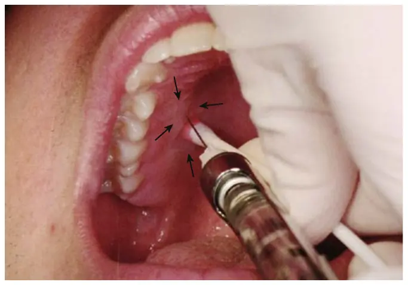

نسخه استخراجشده؛ ترجمه یا تأیید علمی انجام نشده است. وضعیت: captured
برای جراحی فلپ در ناحیهی مولرهای بالا، بلاک PSA زدهای و بیمار دردی ندارد، ولی میدان جراحی مدام پر از خون میشود. بیحسی کامل است؛ پس چرا خونریزی کنترل نشده است؟

تنگکننده با تحریک گیرندههای آلفا در دیوارهی رگ، عضلهی صاف شریان را منقبض میکند؛ پس فقط همانجایی که تزریق شده خونریزی را کم میکند. قاعدهی کار:
اپینفرین روی قلب هم اثر دارد؛ کمترین حجم و رقیقترین غلظتی را بزن که خونریزی را کنترل میکند. نوراپینفرین برای کنترل خونریزی مناسب نیست، چون ایسکمی شدید و نکروز بافت میدهد.
با کم شدن اپینفرین در بافت، رگها برگشتی گشاد میشوند. پس از جراحی مولر سوم با لیدوکائین و اپینفرین، ۱۳ بیمار از ۱۶ نفر در ساعت ششم خونریزی داشتند و با مپیواکائین ۳٪ هیچکدام. بیمار را از خونریزی دیرهنگام آگاه کن.
زیر بیهوشی عمومی هم برای کشیدن مولر سوم بیحسی موضعی میزنند، چون:
برای کشیدن چهار مولر سوم معمولاً حدود ۸٫۱ میلیلیتر تزریق میشود؛ یعنی ۱۶۲ میلیگرم از محلول ۲٪. هر تزریق را، حتی وقتی پشت هم میزنی، آرام بزن.
اشتباه رایج: تزریق تند در جراحی چندناحیهای. تزریق تند درد تزریق را بیشتر میکند، اگر داخل رگ برود خطر مسمومیت شدید را بالا میبرد و به بافت آسیب میزند. اگر پس از بلاک موفق، حاشیهی تحتانیخلفی مندیبل هنوز حس دارد، عصبدهی آن ناحیه از عصب سهقلو نیست؛ با PDL یا اینترااوسئوس کامل کن.